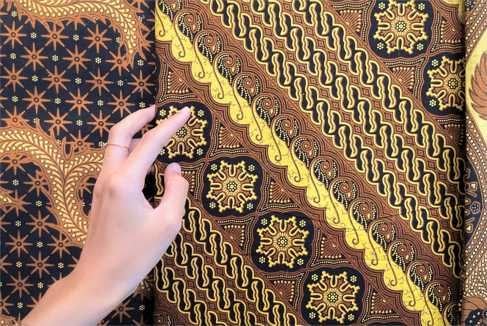

Di Balik Selembar Kain: Memahami Proses Produksi Textile Printing
Ketika melihat kain yang sudah jadi, perhatian kita biasanya tertuju pada motif dan warnanya.
Namun, sebelum menjadi selembar kain siap digunakan, terdapat berbagai tahapan yang harus dilalui. Setiap proses saling berkaitan dan memiliki peran dalam menghasilkan kain dengan kualitas yang sesuai kebutuhan.
1. Pemilihan Bahan
Proses dimulai dari menentukan material yang sesuai dengan kebutuhan produk.
Setiap jenis bahan memiliki karakter yang berbeda. Ada bahan yang terasa ringan dan nyaman, ada yang memiliki karakter lebih kuat, dan ada pula yang dipilih karena sesuai dengan kebutuhan produk tertentu.
Karena itu, pemilihan bahan menjadi salah satu langkah awal yang penting dalam proses produksi.
2. Pengembangan Desain Motif
Setelah bahan ditentukan, desain motif menjadi bagian berikutnya.
Motif dapat disesuaikan dengan karakter produk dan kebutuhan pelanggan. Dari motif batik hingga desain tekstil yang lebih modern, setiap desain perlu dipersiapkan agar dapat diterapkan dengan baik pada material yang dipilih.
3. Proofing Warna
Warna pada desain digital belum tentu terlihat sama ketika diaplikasikan pada kain.
Karena itu, dilakukan proses proofing untuk memastikan warna dan tampilan motif dapat disesuaikan sebelum masuk ke produksi.
Tahap ini membantu mengurangi perbedaan antara desain yang direncanakan dengan hasil pada kain.
4. Proses Printing
Setelah desain dan warna dipersiapkan, proses printing dilakukan untuk menerapkan motif pada kain.
Metode printing dapat disesuaikan dengan kebutuhan produksi. Pada tahap ini, ketepatan proses menjadi bagian penting untuk menghasilkan motif dan warna yang sesuai.
5. Quality Control
Setelah melalui proses produksi, kain perlu diperiksa kembali.
Quality control dilakukan untuk memastikan hasil produksi memenuhi standar yang telah ditentukan, baik dari sisi motif, warna, maupun kondisi kain.
6. Packing
Setelah melewati pemeriksaan, kain yang telah memenuhi standar kemudian dipersiapkan untuk proses berikutnya, termasuk pengemasan dan pengiriman.
Dari bahan hingga menjadi kain siap digunakan, setiap tahapan memiliki perannya sendiri.
Itulah mengapa kualitas tidak hanya ditentukan oleh hasil akhir. Kualitas dimulai dari proses yang tepat, sejak langkah pertama.